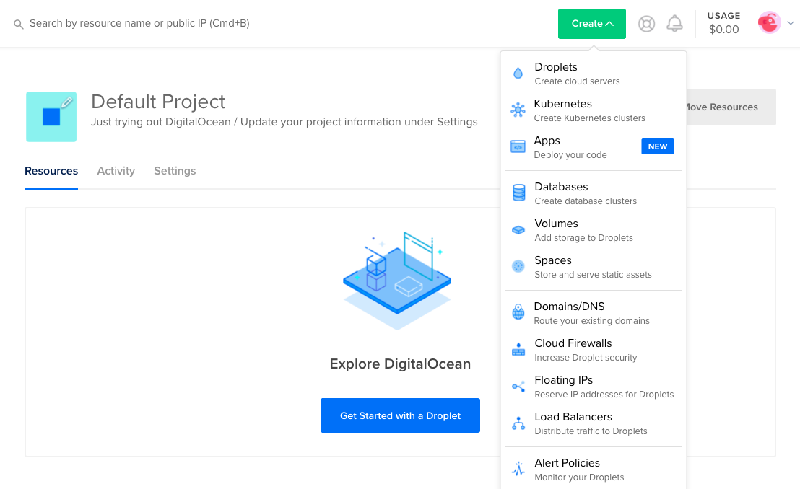
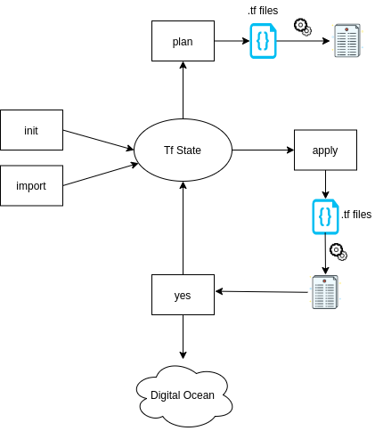
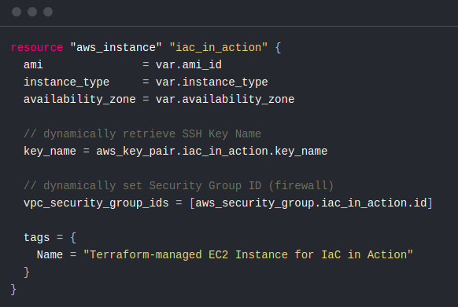
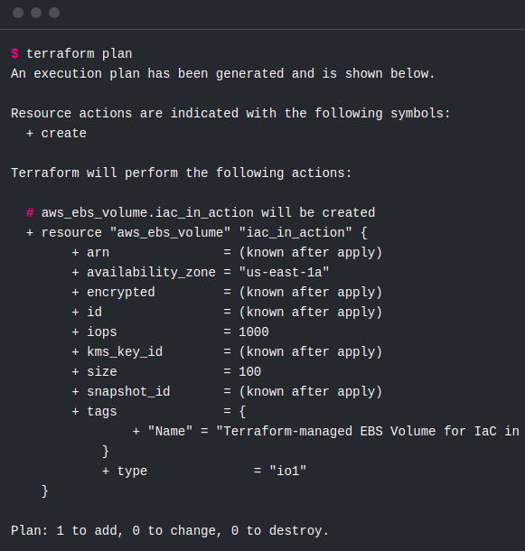

Introduction to Terraform
Guillermo Guerrero
Follow me on github:
https://github.com/ryanfox1985
February 2nd, 2021
Terraform is a tool for creating, changing, and versioning infrastructure safely and predictably
-- terraform.io

- Hashicorp
- Open Source
- Written in Go
- CLI tool and precompiled binaries for Mac, Linux, Windows, FreeBSD, and OpenBSD
- 27k+ Commits, 25.3k+ Stars, 6.4k+ Forks
- Providers (AWS, Google Cloud, Azure, Digital Ocean... +500 more)
https://www.terraform.io
https://github.com/hashicorp/terraform
HASHICORP

WHY INFRASTRUCTURE AS CODE MATTERS?
You can deploy manually infrastructure...
BENEFITS OF INFRASTRUCTURE AS CODE
- Repeatability
- Automation
- Version Control
- Code Review
- Documentation
How's that work?
Basic CLI usage
- `plan` to view the execution plan
- `apply` to execute the plan
- `import` to import resources to the current state
(there are more; these are the basics)
Life circle
.tf file
Plan
Digital Ocean resources and examples
WebsiteRoadmap
- Import all the infrastructure
- Improve organization `.tf` files
- Start to manage OVH domains